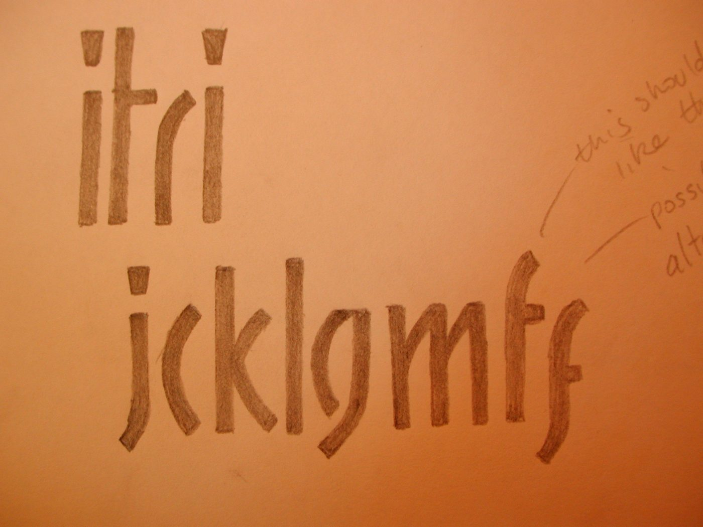
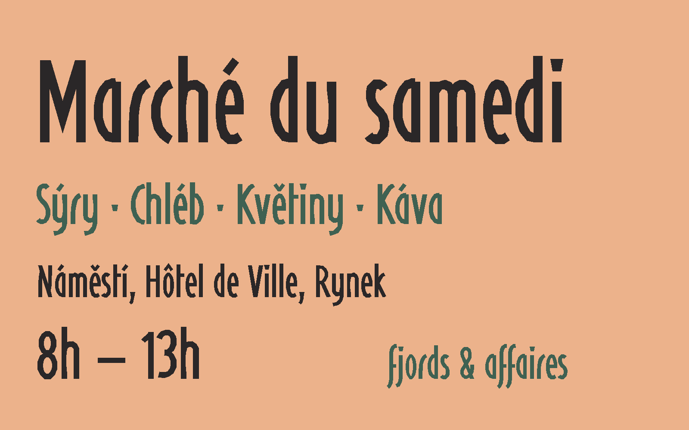

Mckitrick began as ten pencil letters on a sheet of apricot paper: i t r i, j c k l g m f. Each was drawn as a few separate strokes with flat, slightly angled ends, the strokes stopping just short of each other where they meet. The dots on i and j were cut wider at the top than the bottom.

The rest of the typeface was drawn to the same rules: one stroke weight, flat cuts, open joins and tapered dots. The capitals follow the narrow proportions of the lowercase, and the accents reuse the dot and the flat-ended stroke. In the margin of the sketch was a second f with a long tail below the baseline; it is included as stylistic set 1.

Mckitrick is a display face. It is happiest large, in headings, posters, signs and labels, where its separated strokes can be seen.